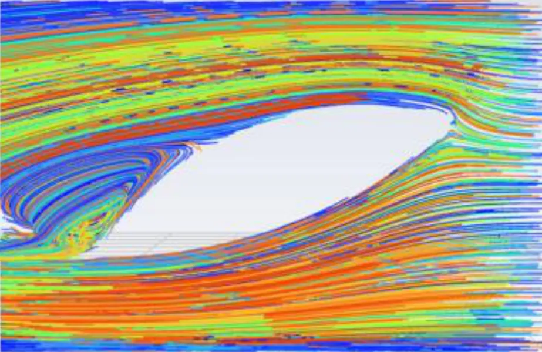

Expected May 2030 · first year
B.Eng. Global Engineering
CentraleSupélec × McGill University, Gif-sur-Yvette, France
McGill University × CentraleSupélec · B.Eng. Global Engineering
I model how air, heat and uncertainty behave, then turn the numbers into decisions an engineer can defend. The case studies below run from CFD aerodynamics to stochastic modelling and thermal design.
01 · Projects
Each one opens in full: the question, the method, the measured numbers and the figures.

InteractiveNumerical fluid dynamics · 2026
The same wing profile solved twice, once clean and once with boundary-layer vortex generators, at 9°, 15° and 21° of incidence in Ansys Fluent. Six steady RANS configurations, force reports, and a live streamline model you can drive yourself.
Stochastic modelling · 2025
A discrete-time chain over bullish, bearish and stagnant regimes: transition matrices, eigen-analysis at λ = 1 and the long-run stationary distribution.
Thermal design · in progress
A MATLAB conjugate-heat-transfer model for a pin-fin heat sink, with Elenbaas correlations standing in for the fluid side where a purely structural FEA falls short.
This section is built to grow: new case studies are added here as they ship.
02 · Toolkit
Grouped by the job each tool does, not by logo count.
Steady external flows, mesh setup, force-report extraction and field post-processing.
Dynamic systems, multiphysics loops and stochastic models built from first principles.
Clean, shared-topology geometry that survives the trip into a solver.
Reproducible scripts, clean version history, and reports a non-specialist can read.
03 · Credentials
Nine completed programmes across CFD, CAD, data and AI tooling.
Expected May 2030 · first year
CentraleSupélec × McGill University, Gif-sur-Yvette, France
Obtained May 2025
Québec, Canada
Ansys
External flow · downforce
Ansys
Buckingham π · scale testing
MathWorks
Algorithm design · dynamic systems
MathWorks
Multiphysics · state machines
PTC
Parametric 3D · assemblies
IBM SkillsBuild
Data analysis · pipelines
IBM SkillsBuild
Agile planning · delivery
Anthropic
Agent systems · tool integration
Applied AI · prompt practice
04 · Experience
Operating responsibility taken early, usually in small teams where the work is real.
Artémis Spiritueux, Québec, Canada
Corporate governance, bookkeeping and regulatory compliance with government bodies. Co-lead commercial strategy for product launches, oversee the web platform, and support international export initiatives.
Centre de ski Le Relais, Lac-Beauport, Canada
Certified technical instruction and safety management for bilingual groups across every age bracket, and the pedagogy has to work on the first attempt, in the cold.
Les Trois Garçons · Pub Murphy · Pub St-Alexandre, Vieux-Québec
Multi-menu preparation, inventory coordination and station timing under service pressure, with strict hygiene standards.
FIS Freestyle Ski World Cup, Le Relais
Jump-site sanitation and perimeter safety during an international World Cup stage.
05 · Contact
Open to engineering internships and research placements in aerodynamics, simulation or mechanical design, in France, Canada, or with remote-friendly teams. I answer quickly and I bring the files.
Gif-sur-Yvette, France · CET / UTC+1 · Replies within 48 h